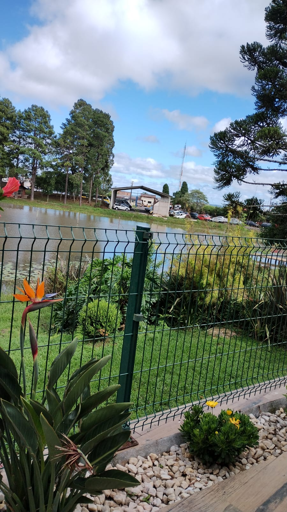

Vegetação Brasileira
O estado do Paraná abriga uma rica diversidade de vegetação, por estar localizado em uma área de transição entre diferentes biomas. O principal deles é a Mata Atlântica, que cobre boa parte do estado e abriga árvores nativas como a araucária, além de diversas espécies de animais e plantas. Nas regiões mais altas e frias, predominam os campos naturais, com gramíneas e arbustos. Já no noroeste paranaense, encontramos áreas de cerrado, com vegetação mais seca e adaptada a solos pobres. Apesar de sua riqueza, grande parte da vegetação original foi substituída por áreas agrícolas. Por isso, é fundamental preservar os fragmentos que restam, incentivando o reflorestamento e a educação ambiental.
